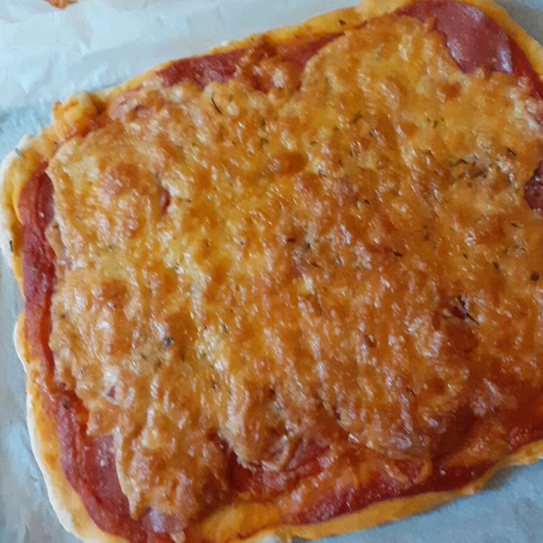

Pizza brooclyn

So, what makes up a Brooklyn pizza? Well, many consider this pizza to be one of the more modern types but closely related to the parent Italia type of pizza
Soft stretchy dough you'll think came straight from Brooklyn, NY.
Ingredients/h2>
- 3 cups bread flour, divided, or as needed
- 1 cup warm water
- 1 tablespoon active dry yeast
- ½ teaspoon salt
- 2 tablespoons olive oil
Steps
- Combine 2 cups bread flour, water, yeast, and salt in a bowl with an electric mixer fitted with dough attachment. Mix on lowest speed until blended but still moist, about 2 minutes. Cover with a towel and let rise in a warm place until doubled in volume, about 20 minutes
- Uncover bowl and mix the dough with electric mixer on low speed until dough has pulled together, about 5 minutes. Sprinkle in remaining flour until soft, sticky dough forms, 1 to 2 minutes
- Increase mixer speed to medium and mix until dough pulls away from sides of bowl, about 8 minutes. Cover with a towel and let rest, about 20 minutes. Rub a few drops of olive oil evenly into a plastic container
- Transfer dough onto a floured work surface. Dust hands with flour and knead dough until soft but still wet on the inside. Form into a ball and place into prepared container. Refrigerate dough at least 1 day and up to 7 days
To go back to the index click Here